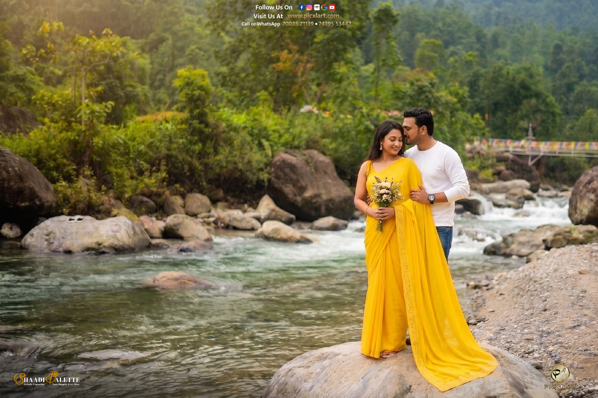
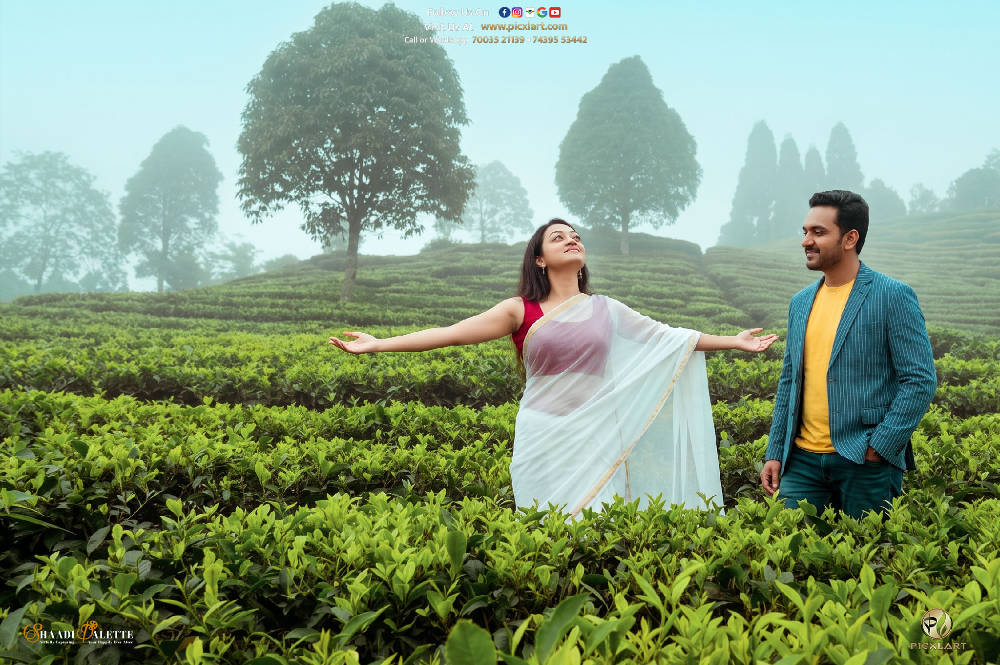
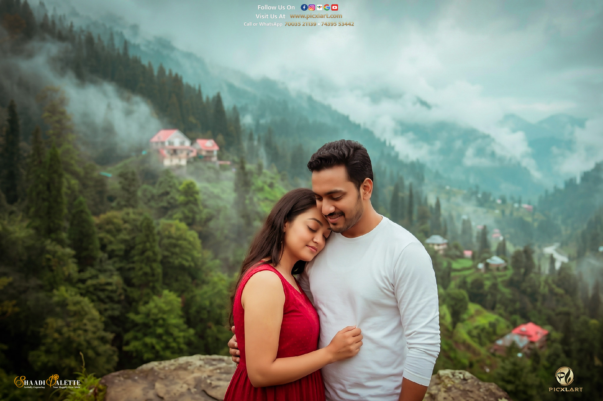
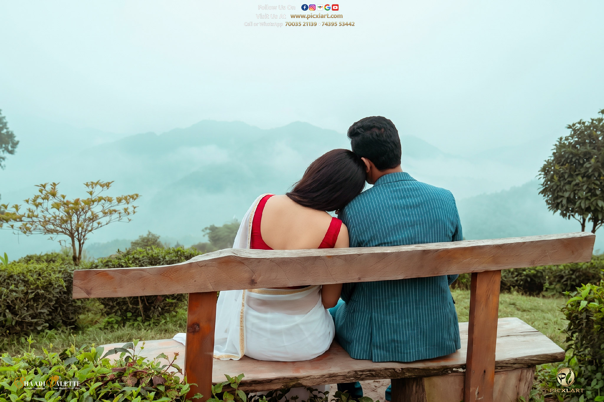

If you are dreaming of a pre-wedding photoshoot that balances serene mountain landscapes, lush pine groves, and crystal-clear mountain streams without the usual tourist crowd of popular hill stations, Lower Sittong is your ideal destination. Tucked away in the serene foothills of Darjeeling district in North Bengal, this offbeat paradise provides an enchanting backdrop for couples looking for pure romance, peace, and cinematic frames.
Why Choose Lower Sittong for Your Pre-Wedding Shoot?
While Upper Sittong is widely famous for its vibrant orange orchards during winter, Lower Sittong offers a distinctly romantic atmosphere defined by flowing rivers, wooden footbridges, dramatic rock formations, and untouched pine forests. It allows couples to capture diverse moods—from candid riverside strolls to dramatic forest portraits—all within a compact and peaceful location.

Top Photoshoot Spots in & Around Lower Sittong
- Riyang River Banks: The crystal-clear water flowing over smooth river stones creates a soothing, natural setting perfect for romantic reflection shots and flowing gown portraits.
- Traditional Wooden Bridges: Suspended over the gentle river currents, these rustic bridges offer a classic, timeless mountain aesthetic for intimate couple portraits.
- Dense Pine & Teak Forests: The tall, green canopies filter natural sunlight into golden rays, providing ideal lighting for cinematic drone videos and moody forest frames.
- Charming Riverside Homestays: Beautiful wooden cottages with well-kept gardens offer cozy, relaxed lifestyle shots that reflect warmth and comfort.
- Ahaldara Viewpoint (Nearby): Located just a short drive up, it offers a breathtaking 360-degree panoramic view of the snow-capped Himalayan ranges and tea gardens at sunrise.


Best Time to Plan Your Shoot
Lower Sittong retains its natural charm throughout the year, but the ideal time depends on your visual preference:
- October to February (Autumn & Winter): Clear blue skies, crisp mountain air, and a distant view of the Himalayas. Upper Sittong also blooms with bright oranges during late autumn.
- March to May (Spring): Lush green surroundings, pleasant weather, and vibrant wildflowers along the valley.
- Monsoon Season (July to September): Highly recommended for couples who love moody, misty atmospheres, cascading river streams, and deep green forest backdrops.

Essential Tips for Couples
- Outfits: Flowing pastel or bright red/maroon ethnic and western dresses contrast beautifully against the deep green forest and grey river stones.
- Footwear: Carry comfortable sneakers or flat shoes for moving between river stones and uneven terrain, alongside your photoshoot footwear.
- Stay & Logistics: Plan a 2-day trip so you can shoot comfortably during both sunrise and sunset golden hours without rushing.
At Picxlart Photography & Events Co., we specialize in destination pre-wedding shoots across West Bengal and North Bengal. Our team brings professional optics, cinematic drone capabilities, and artistic storytelling techniques to ensure your love story is preserved with royal elegance and emotional depth.